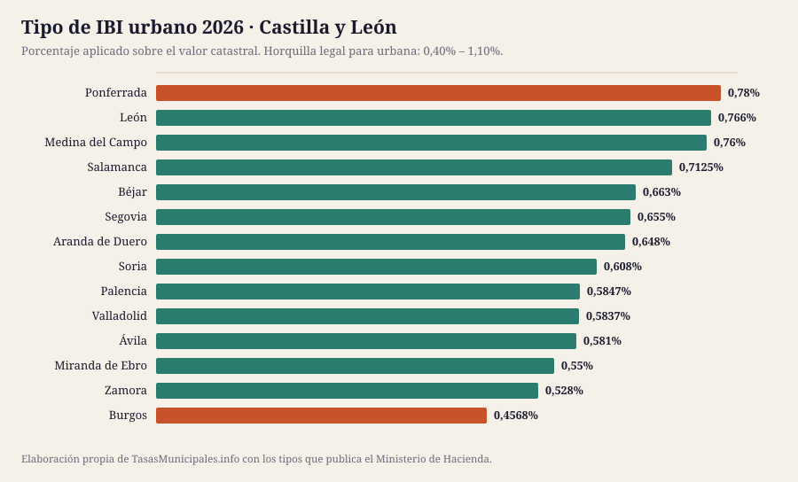
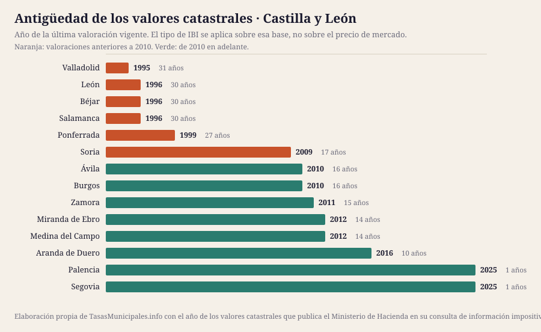

IBI, tasa de basuras y plusvalía en Castilla y León 2026
Esta guía reúne el IBI, la plusvalía municipal, el impuesto de circulación y las bonificaciones de los 14 municipios de Castilla y León que cubrimos, con el detalle de cada uno y una tabla para compararlos de un vistazo. Población cubierta: 1.205.332 habitantes.
Lo que cuesta el IBI en Castilla y León en 2026
El tipo de IBI urbano en Castilla y León se mueve entre el 0,4568% de Burgos y el 0,78% de Ponferrada, con una media de 0,63% en los 14 municipios analizados. Esa horquilla parece pequeña, pero sobre un valor catastral de 50.000 € supone una diferencia de 162 € al año según dónde esté el inmueble: 228 € en Burgos frente a 390 € en Ponferrada.
El tipo no lo explica todo: sobre él se aplica el valor catastral, y en Castilla y León las valoraciones vigentes van de 1995 en Valladolid a 2025 en Segovia. En 6 de los 14 municipios con dato la última valoración es anterior a 2010, así que la base del recibo arrastra el mercado inmobiliario de entonces. El año de los valores de cada municipio está en la tabla, tal y como lo publica el Ministerio de Hacienda.
Aquí no publicamos el importe de la tasa de residuos ni las fechas de cobro de cada municipio: no existe fuente estatal que los recoja y preferimos el hueco a un dato sin respaldo. Lo que sí fija la ley es el plazo por defecto del IBI, del 1 de septiembre al 20 de noviembre cuando la ordenanza no señala otro (art. 62.3 de la Ley General Tributaria). La mecánica general del impuesto está en las guías de IBI 2026, bonificaciones y plusvalía; aquí van los datos de Castilla y León.
Ficha fiscal de cada municipio
Tabla comparativa: el IBI en los 14 municipios de Castilla y León
Ordenable por cualquier columna. Todas las cifras salen de la consulta de información impositiva del Ministerio de Hacienda. «Cuota IBI» aplica el tipo de cada municipio a un valor catastral común de 50.000 €; con el de tu recibo, usa la calculadora. «Valores catastrales» es el año de la última valoración vigente, que determina la base sobre la que se aplica el tipo.
| Municipio | Habitantes | IBI urbano | IBI rústico | Cuota IBI (VC 50.000 €) | Valores catastrales | Tipo BICE |
|---|---|---|---|---|---|---|
| Valladolid | 302.614 | 0,5837% | 0,5% | 292 € | 1995 | 0,57% |
| Burgos | 177.402 | 0,4568% | 0,727% | 228 € | 2010 | 0,632% |
| Salamanca | 146.110 | 0,7125% | 0,4845% | 356 € | 1996 | 0,6175% |
| León | 123.446 | 0,766% | 0,766% | 383 € | 1996 | 0,766% |
| Palencia | 77.466 | 0,5847% | 0,886% | 292 € | 2025 | 1,12% |
| Ponferrada | 63.186 | 0,78% | 0,6% | 390 € | 1999 | 1,3% |
| Zamora | 59.815 | 0,528% | 0,528% | 264 € | 2011 | 0,528% |
| Ávila | 59.107 | 0,581% | 0,749% | 290 € | 2010 | 1,3% |
| Segovia | 52.375 | 0,655% | 0,65% | 328 € | 2025 | 1,3% |
| Soria | 41.025 | 0,608% | 0,8% | 304 € | 2009 | 0,6% |
| Miranda de Ebro | 36.622 | 0,55% | 0,7% | 275 € | 2012 | 1,3% |
| Aranda de Duero | 33.956 | 0,648% | 0,648% | 324 € | 2016 | 0,6% |
| Medina del Campo | 20.215 | 0,76% | 0,9% | 380 € | 2012 | 0,8823% |
| Béjar | 11.993 | 0,663% | 0,727% | 332 € | 1996 | 0,678% |


Quién gestiona y cobra el IBI en Castilla y León
El recibo, el calendario y las solicitudes se tramitan donde esté la recaudación, que no siempre es el ayuntamiento:
| Provincia | Municipios en la guía | Organismo de recaudación | Estado del enlace |
|---|---|---|---|
| Burgos | 3 | Diputación Provincial de Burgos | responde correctamente |
| Valladolid | 2 | Diputación de Valladolid | pendiente de comprobar |
| Salamanca | 2 | REGTSA, Organismo Autónomo de Recaudación de la Diputación de Salamanca | responde correctamente |
| León | 2 | Diputación de León | responde correctamente |
| Palencia | 1 | Diputación de Palencia | responde correctamente |
| Zamora | 1 | Diputación de Zamora | responde correctamente |
| Ávila | 1 | Diputación de Ávila | responde correctamente |
| Segovia | 1 | Diputación de Segovia | responde correctamente |
| Soria | 1 | Diputación Provincial de Soria | responde correctamente |
De ahí que no haya una fecha única para toda Castilla y León: cada organismo publica su calendario.
¿Dónde se paga más y menos IBI en Castilla y León?
La mediana del tipo urbano de los 14 municipios de Castilla y León es del 0,63%, y queda 0,021 puntos por encima de la mediana nacional de la guía (0,61%): 11 € más al año por un inmueble de 50.000 €.
En el extremo alto está Ponferrada con el 0,78%; en el bajo está Burgos con el 0,4568%. Ojo: un tipo alto no significa un recibo alto, porque la cuota es valor catastral × tipo. Ranking nacional →
Quién ha movido el tipo entre 2024 y 2025
En Castilla y León, 3 municipios han subido el tipo y un municipio lo ha bajado; el resto lo mantiene.
| Municipio | 2024 | 2025 | Variación |
|---|---|---|---|
| Segovia | 0,4813% | 0,655% | Sube 0,174 puntos |
| Ávila | 0,543% | 0,581% | Sube 0,038 puntos |
| Valladolid | 0,6144% | 0,5837% | Baja 0,031 puntos |
| Soria | 0,594% | 0,608% | Sube 0,014 puntos |
ICIO, impuesto de circulación y plusvalía en Castilla y León
El IBI no es el único tributo que aprueba un ayuntamiento. En Castilla y León, el ICIO va del 2% al 4% (mediana 3,525%); un turismo de 8 a 11,99 CV paga entre 47,64 € y 68,16 € al año; 7 de 14 aplican los coeficientes máximos de plusvalía del art. 107.4 TRLRHL.
| Municipio | ICIO (obras) | IVTM 8–11,99 CV | Plusvalía: tipo máximo | ¿Coeficientes al tope legal? |
|---|---|---|---|---|
| Aranda de Duero | 3,16% | 47,64 € | 20% | Sí |
| Burgos | 3,3% | 62,62 € | 21% | No |
| Béjar | 2,8% | 59,20 € | 29,62% | Sí |
| León | 4% | 58,50 € | 30% | No |
| Medina del Campo | 3,95% | 55,40 € | 29,37% | No |
| Miranda de Ebro | 4% | 62,37 € | 15% | Sí |
| Palencia | 2,29% | 51,04 € | 29,8% | Sí |
| Ponferrada | 2% | 58,35 € | 27% | No |
| Salamanca | 3,75% | 67,76 € | 30% | Sí |
| Segovia | 4% | 60,66 € | 15% | Sí |
| Soria | 3,9% | 63,48 € | 18% | No |
| Valladolid | 3,9% | 68,16 € | 21,76% | No |
| Zamora | 3,2% | 49,08 € | 30% | Sí |
| Ávila | 2,5% | 60,66 € | 20% | No |
Fuente: Ministerio de Hacienda. El guion marca lo que la consulta no publica. La tarifa completa del IVTM está en cada ficha.
Guía del impuesto de circulación → · Comparativa del IVTM → · Quién aplica el coeficiente máximo de plusvalía →
Cuándo se revisaron los valores catastrales en Castilla y León
La cuota del IBI es valor catastral × tipo, así que la fecha de la última valoración colectiva pesa tanto como el porcentaje que vota el pleno. En Castilla y León la mediana está en 2010, más reciente que la del conjunto de la guía (2005), y 5 de 14 municipios arrastran valores de hace 20 años o más.
| Municipio | Año de la valoración | Antigüedad | Tipo urbano |
|---|---|---|---|
| Valladolid | 1995 | 31 años | 0,5837% |
| Salamanca | 1996 | 30 años | 0,7125% |
| León | 1996 | 30 años | 0,766% |
| Béjar | 1996 | 30 años | 0,663% |
| Ponferrada | 1999 | 27 años | 0,78% |
| Soria | 2009 | 17 años | 0,608% |
| Burgos | 2010 | 16 años | 0,4568% |
| Ávila | 2010 | 16 años | 0,581% |
| Zamora | 2011 | 15 años | 0,528% |
| Miranda de Ebro | 2012 | 14 años | 0,55% |
| Medina del Campo | 2012 | 14 años | 0,76% |
| Aranda de Duero | 2016 | 10 años | 0,648% |
| Palencia | 2025 | 1 años | 0,5847% |
| Segovia | 2025 | 1 años | 0,655% |
Qué es el valor catastral, cómo se consulta y cómo se corrige → · Qué implica una ponencia desfasada →
Población de los municipios de Castilla y León (2020–2025)
El padrón no cambia el IBI, pero sí explica la tasa de residuos: cuando el coste del servicio se reparte entre menos vecinos, la tarifa sube. En conjunto, los 14 municipios de Castilla y León que cubrimos han ganado 4.986 habitantes desde 2020 (8 crecen, 6 pierden población).
| Municipio | 2020 | 2025 | Variación | % |
|---|---|---|---|---|
| Valladolid | 299.265 | 302.614 | +3.349 | +1,1 % |
| Burgos | 176.418 | 177.402 | +984 | +0,6 % |
| Salamanca | 144.825 | 146.110 | +1.285 | +0,9 % |
| León | 124.028 | 123.446 | -582 | -0,5 % |
| Palencia | 78.144 | 77.466 | -678 | -0,9 % |
| Ponferrada | 64.509 | 63.186 | -1.323 | -2,1 % |
| Zamora | 60.988 | 59.815 | -1.173 | -1,9 % |
| Ávila | 58.369 | 59.107 | +738 | +1,3 % |
| Segovia | 52.057 | 52.375 | +318 | +0,6 % |
| Soria | 39.821 | 41.025 | +1.204 | +3,0 % |
| Miranda de Ebro | 35.760 | 36.622 | +862 | +2,4 % |
| Aranda de Duero | 33.187 | 33.956 | +769 | +2,3 % |
| Medina del Campo | 20.416 | 20.215 | -201 | -1,0 % |
| Béjar | 12.559 | 11.993 | -566 | -4,5 % |
Fuente: INE, padrón a 1 de enero.

Ficha fiscal de los 14 municipios de Castilla y León
Cada ficha recoge el detalle de ese ayuntamiento: tipos aprobados, calendario de cobro, bonificaciones, plusvalía y enlaces oficiales donde comprobarlo.
- Valladolid — IBI 0,5837% · cuota 292 € con VC de 50.000 € · valores de 1995
- Burgos — IBI 0,4568% · cuota 228 € con VC de 50.000 € · valores de 2010
- Salamanca — IBI 0,7125% · cuota 356 € con VC de 50.000 € · valores de 1996
- León — IBI 0,766% · cuota 383 € con VC de 50.000 € · valores de 1996
- Palencia — IBI 0,5847% · cuota 292 € con VC de 50.000 € · valores de 2025
- Ponferrada — IBI 0,78% · cuota 390 € con VC de 50.000 € · valores de 1999
- Zamora — IBI 0,528% · cuota 264 € con VC de 50.000 € · valores de 2011
- Ávila — IBI 0,581% · cuota 290 € con VC de 50.000 € · valores de 2010
- Segovia — IBI 0,655% · cuota 328 € con VC de 50.000 € · valores de 2025
- Soria — IBI 0,608% · cuota 304 € con VC de 50.000 € · valores de 2009
- Miranda de Ebro — IBI 0,55% · cuota 275 € con VC de 50.000 € · valores de 2012
- Aranda de Duero — IBI 0,648% · cuota 324 € con VC de 50.000 € · valores de 2016
- Medina del Campo — IBI 0,76% · cuota 380 € con VC de 50.000 € · valores de 2012
- Béjar — IBI 0,663% · cuota 332 € con VC de 50.000 € · valores de 1996
Preguntas frecuentes sobre el IBI y las tasas en Castilla y León
¿Qué municipio de Castilla y León tiene el IBI más alto en 2026?
De los 14 municipios analizados, el tipo urbano más alto es el de Ponferrada (0,78%) y el más bajo el de Burgos (0,4568%). Sobre un valor catastral de 50.000 € son 390 € frente a 228 € al año.
¿Cuál es el tipo medio de IBI en Castilla y León?
La media de los 14 municipios de Castilla y León que recoge esta guía es del 0,63%, con una mediana del 0,63%. La ley permite moverse entre el 0,40% y el 1,10% en urbana.
¿Cuándo se paga el IBI en Castilla y León?
No hay una fecha única: la fija cada ordenanza y se aprueba cada ejercicio, por eso no publicamos fechas concretas. Cuando la ordenanza no señala otro plazo se aplica el del artículo 62.3 de la Ley General Tributaria, del 1 de septiembre al 20 de noviembre, y quien lo modifique no puede dejarlo en menos de dos meses. El calendario del año lo publica el organismo que recauda, enlazado en la ficha de cada municipio.
¿Cuánto se paga de basuras en Castilla y León?
No lo publicamos porque no podemos verificarlo: la tarifa está en la ordenanza fiscal de cada ayuntamiento y ninguna administración estatal las reúne. La Ley 7/2022 obliga desde el 10 de abril de 2025 a cobrar una tasa de residuos específica, diferenciada y no deficitaria (art. 11.3), y solo exige comunicarla a la comunidad autónoma (art. 11.5). En la guía de la tasa de residuos explicamos dónde localizar la tuya.
¿Quién cobra el IBI en Castilla y León?
En Castilla y León la recaudación de buena parte de los ayuntamientos corre a cargo de: Diputación de Valladolid, Diputación Provincial de Burgos, REGTSA, Organismo Autónomo de Recaudación de la Diputación de Salamanca, Diputación de León, Diputación de Palencia, Diputación de Zamora, Diputación de Ávila, Diputación de Segovia y Diputación Provincial de Soria. El resto la lleva su propio ayuntamiento. Cada ficha indica cuál corresponde y enlaza dónde consultar el calendario.
¿Dónde cuesta más el impuesto de circulación en Castilla y León?
Por un turismo de 8 a 11,99 caballos fiscales, el más caro de Castilla y León es Valladolid con 68,16 € al año y el más barato Aranda de Duero con 47,64 €. La cuota mínima que fija la ley es de 34,08 €.
Qué está verificado en esta página
| Dato | Estado en Castilla y León |
|---|---|
| Tipos de IBI, rústica, BICE y año de los valores catastrales | 14 de 14 contrastados con el Ministerio de Hacienda |
| Webs oficiales de los ayuntamientos | 2 de 3 respondían el 2026-07-25 |
| Tasa de residuos y fechas de cobro | No se publican: las fija cada ordenanza, no hay registro estatal y no hemos podido acceder a una fuente primaria |
Si un dato no coincide con lo que dice tu ayuntamiento, manda la ordenanza publicada en el boletín oficial. Qué fuente respalda cada dato y cómo corregimos → · Avisar de un error
Normativa citada en esta página
- Real Decreto Legislativo 2/2004 (texto refundido de la Ley Reguladora de las Haciendas Locales)
- Real Decreto Legislativo 1/2004 (texto refundido de la Ley del Catastro Inmobiliario)
- Ley 7/2022, de 8 de abril, de residuos y suelos contaminados para una economía circular
- Real Decreto-ley 26/2021, de 8 de noviembre (adaptación del IIVTNU a la jurisprudencia constitucional)
- Sentencia del Tribunal Constitucional 182/2021, de 26 de octubre
- Ley 58/2003, de 17 de diciembre, General Tributaria
- Sede Electrónica del Catastro